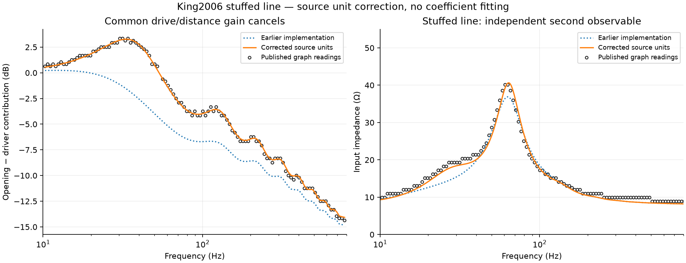
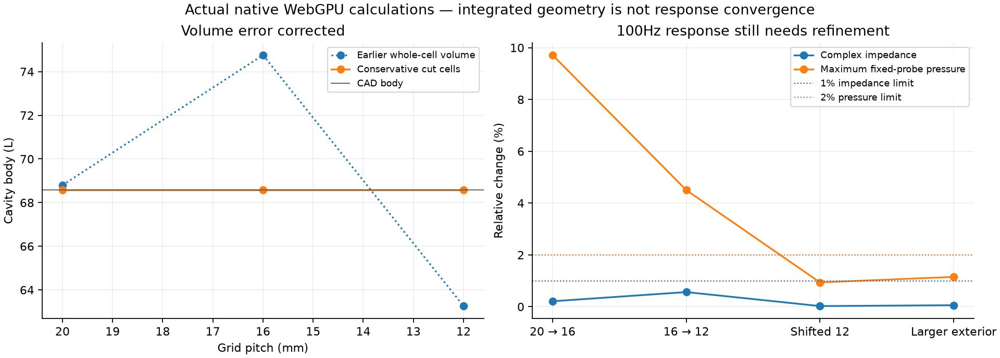

2026-11-04 · ÆGIR0.9.5 · Developer evidence
Correct the equations, then check the calculation
The source defines cycle =2π rad and Hz=cycle/sec in the DX3 worksheet, p1. Therefore ω/(50Hz) reduces to f/50 for frequency in ordinary Hz. The previous implementation missed this definition and used2πf/50. No density, resistance coefficient, source level or frequency shift was fitted.
The stuffed opening/driver ratio improves from 2.735 to 0.173 dB RMS on the retained King2006 graph readings. Independent Python/cmath/SciPy and TypeScript calculations agree. Full original2006 code is unavailable; historical-law transfer and sound-speed interpolation remain assumptions.

Other stuffed-line curves,10–800Hz
| Metric | RMS error | Maximum error | Compatibility |
|---|
| spl | 0.3262 | 0.7095 | incompatible |
| coneSpl | 0.2793 | 0.6126 | incompatible |
| terminusSpl | 0.3014 | 0.6293 | incompatible |
| impedance | 1.0698 | 2.4587 | incompatible |
SPL values use assumed drive/distance and are diagnostic. Impedance has no arbitrary SPL gain; source graph uncertainty is ±2Ω and ±2% frequency. Material calibration is still assumed. Published simulation agreement is not physical validation.
Conservative3D geometry and automatic quality checks
Fractional air volumes and open face areas now enter pressure/flow updates, reciprocal piston coupling and material-aware stability limits. The CAD body stays68.58L on20/16/12mm grids and a shifted12mm grid. Piston area is correct to numerical precision. CPU/GPU pressure/circuit/material recordings agree within2.67×10⁻⁶ relativeL2 in the native test.

Calculation status: refine-further. The automatic test correctly withholds a pass. Pressure changes4.50% on16→12mm; successive impedance changes increase from0.21% to0.56%. Shift and exterior-padding sensitivities are within the declared limits, and all runs settle. These results do not establish broadband convergence.
- Grid response changes exceed the declared 1% impedance / 2% pressure limits.
- Successive grid differences are not decreasing; further refinement is required.
Unloaded cut-cell modal checks use a pressure-zero mouth, including18mm of outlet neck. The first eight tube modes agree with the analytical spectrum within0.11% at12mm. Exact CAD body volume and modal-domain volume are separate. Thin walls that divide a pressure cell into disconnected air regions are rejected; no artificial path is added.
Retained evidence
Five-run comparison · Native settings, phasors and archive hashes · Independent unit/sensitivity investigation · All published curves and residuals · Analytical cavity checks · Native verification
No new physical measurements were made. See the agent record for limitations, source hashes and reproduction commands.